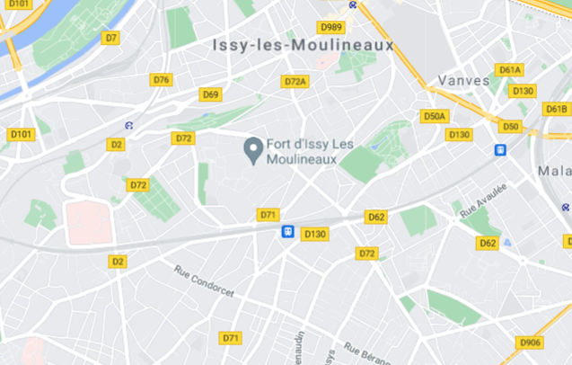

<!-- TODO: Event-dialog-maps non dynamique -->
<h1 mat-dialog-title>Choisissez votre localisation</h1>
<div mat-dialog-content>
  
  <mat-form-field>
    <input [(ngModel)]="data.longitude" matInput>
    <input [(ngModel)]="data.latitude" matInput>
  </mat-form-field>
</div>
<div mat-dialog-actions>
  <button (click)="onNoClick()" mat-button>Quitter</button>
  <button [mat-dialog-close]="data" cdkFocusInitial mat-button>Valider</button>
</div>
